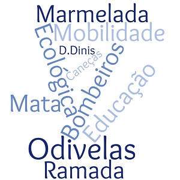

Odivelas

Home
Localização
Multimedia
Informação
Introdução
- Odivelas, uma cidade para tudo e para todos Home
- Cidade numa boa localização Localização
- Pode contemplar um vídeo sobre a cidadeMultimedia
- Cidade da marmelada

Na filologia, a palavra é composta por dois elementos “Odi” e
“velas”, sendo o primeiro de
origem árabe e tendo como significado ”curso de água”.